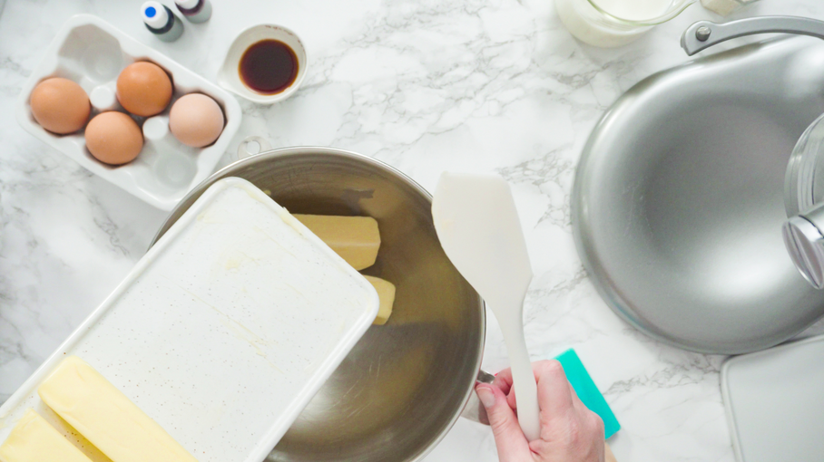

Toafs Cookies

Description
Toaf has the best sugar cookie dough recipe on the planet. Simple & delicious! Let's make it together.
Ingredients
- 2 c. (4 sticks) Softened Unsalted Butter
- 3 c. Confectioners Sugar
- 2 Eggs (Room Temperature)
- 3 tsp. Vanilla Extract
- 5 3/4 c. All Purpose Flour (King Arthur Preferred)
- 2 tsp. Baking Powder
- 2 tsp. Salt
Instructions
- Using your paddle attachment cream together the butter and confectioners sugar until well combined. Scrape down the sides as you go.
- In a separate bowl combine eggs and vanilla. Add eggs and vanilla into the butter and sugar mixture. Scrape down the bowl and mix until well combined.
- In a separate bowl combine the flour, baking powder and salt. Then add into the wet mixture. It is important to not over mix with this step. Just until your dough comes together and doesn't stick to the sides of the bowl, about 45 seconds is just about right.
- Split the dough in half. Roll out the first half on parchment paper with plastic wrap on the top so it doesn't stick to your rolling pin. I use a rolling pin with rings on the side to get my dough precisely 3/8". (The link for this rolling pin is under my products tab from my home page). If you do not have a rolling pin with rings, don't panic. You can still use a regular rolling pin and roll your dough out to your desired thickness. I highly recommend a thicker cookie. The thicker the cookie, the softer the middle while still having that crispy brown bottom.
- Roll out your dough and stack both halves on top of each other using the parchment paper/plastic wrap as a divider. Let sit in the fridge for 2+ hours.
- Once your dough has chilled, preheat oven to 400°. Cut out your shapes and place on silicone mats (this link is also under products tab). You can use parchment paper if you don't have baking mats. Bake cookies for 8-10 minutes, as soon as the bottom is golden brown. Transfer to a cooling rack and let completely cool until you start icing or enjoy plain with some coffee :)